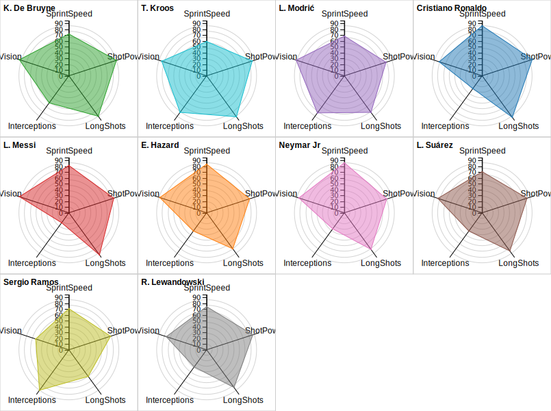

Muestra múltiples cotas continuas como ejes partiendo del mismo punto y disponiéndolas radialmente. Cada dimensión se representa como un eje que comienza desde el centro del carro. Se aplica la misma escala a todos los ejes.

Versión originalmente obtenida de RAWGraphs 2.0 beta. Se utilizan los datos de FIFA player statistics. El gráfico utilizado es Radar Chart, el cual muestra múltiples cotas continuas como ejes partiendo del mismo punto y disponiéndolas radialmente. Cada dimensión se representa como un eje que comienza desde el centro del carro. Se aplica la misma escala a todos los ejes..